Emilia Hørning – Portfolio
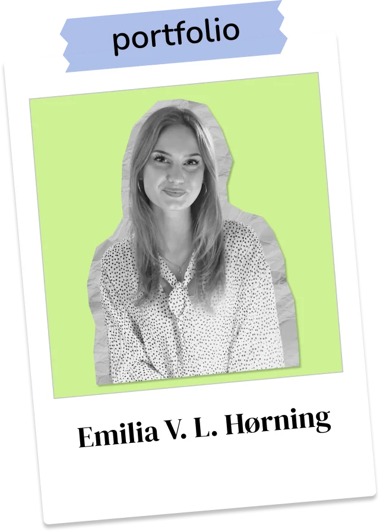
Jeg har fokus på UX/UI-design, konceptudvikling og gode brugeroplevelser.
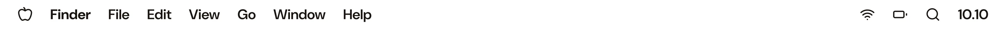
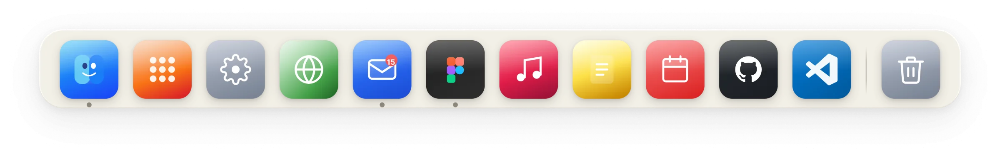

Jeg har fokus på UX/UI-design, konceptudvikling og gode brugeroplevelser.
Jeg er Emilia, multimediedesignstuderende med fokus på UI/UX-design, konceptudvikling og gode brugeroplevelser. Til dagligt arbejder jeg i Figma, Adobe-pakken og bygger frontend med HTML, CSS og JavaScript i VS Code. Erfaringen fra mit arbejde hos Panduro har lært mig at forstå målgrupper, lytte og kommunikere ordentligt. Som person er jeg smilende, nysgerrig og trives bedst i et team, hvor vi sparrer åbent og løfter i flok. Klik rundt i mapperne, og skriv endelig, hvis du vil snakke om en mulig praktikplads!
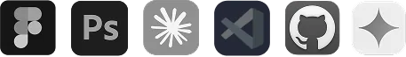
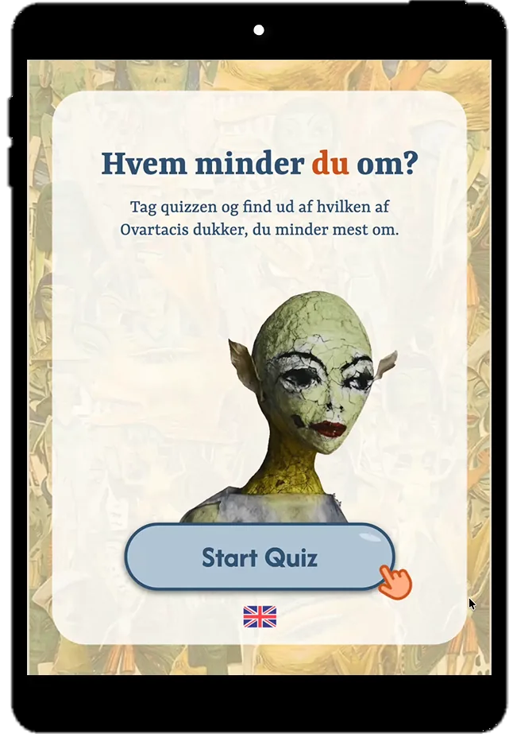
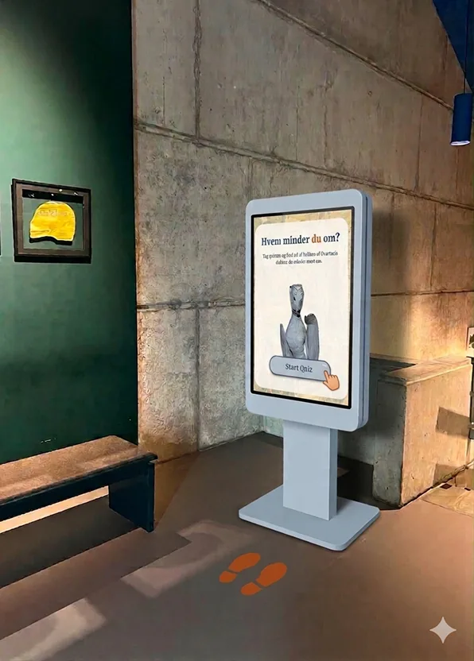
Projektet for Museum Ovartaci startede med en åben idégenerering gennem øvelser som Crazy 8s og Random Input, hvor vi fik udforsket mange kreative vinkler. Vi valgte det stærkeste koncept, tegnede skitser og brugte AI-visualiseringer til hurtigt at afstemme ideen med vores vejledere. For at sikre faglig dybde besøgte vi museet tre gange for at observere udstillingens dukker, studere baggrundsmateriale og tale med de ansatte. Parallelt med researcharbejdet udarbejdede vi et visuelt moodboard, som vi BERT-testede med målgruppen. Første test viste sig for uklart udtryk, så vi reviderede moodboardet, hvilket i anden testrunde gav os en langt mere entydig og moderne designretning.
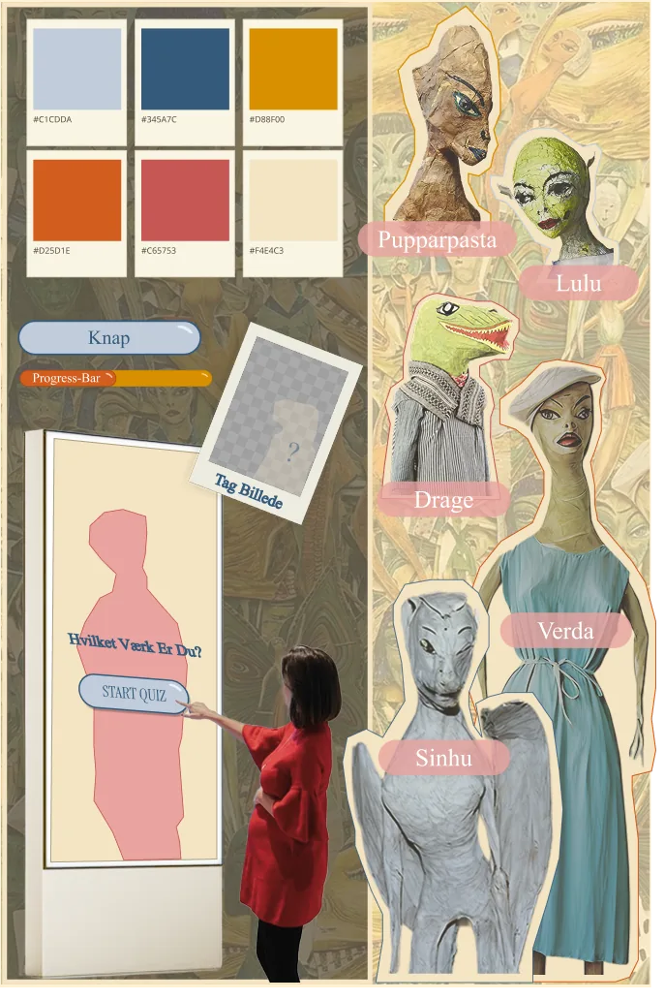
I designfasen byggede vi hurtige Figma-prototyper for at teste forskellige brugerflows. Vi samlede de bedste ideer i tre startside-forslag, som vi præferencetestede på 15 personer fra målgruppen. Testen viste en klar favorit i det dynamiske design med skiftende værker, som bedst fangede brugernes interesse. Derefter samlede vi løsningen i en ny prototype, som vi testede med Experience Mapping for at kortlægge testpersonernes handlinger, tanker og følelser gennem hele forløbet.
Indsigterne fra testen blev brugt til de sidste optimeringer af den endelige installation. Vi gjorde startsiden mere iøjnefaldende med stærkere farver og en kort introduktion. For at mindske den kognitive belastning skar vi quizzen ned fra seks til fem spørgsmål og fjernede en svarmulighed pr. spørgsmål. Til sidst tilføjede vi animationer på resultatsiden og en tydelig "Del dit billede!" call-to-action til selfie-funktionen, hvilket skabte en mere overskuelig og engagerende oplevelse.
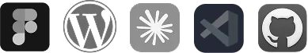
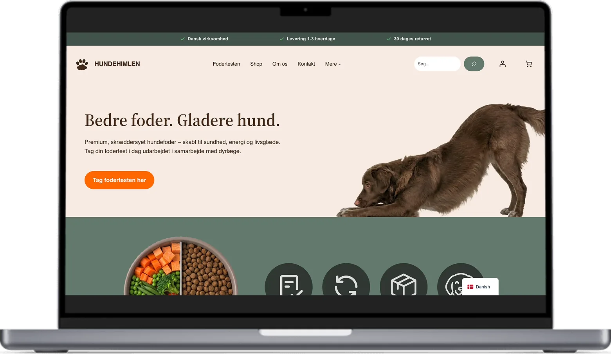
I projektet med Hundehimlen.dk var opgaven at skabe en gennemtænkt B2C e-handelsløsning helt fra bunden. Processen startede i researchfasen, hvor vi kortlagde målgruppens behov og adfærd gennem et Value Proposition Canvas og personas. Parallelt lavede vi en søgeordsanalyse for at afdække, hvad kunderne reelt søger efter online, så vi kunne bygge sidestrukturen op omkring deres søgeintentioner. Visuelt samlede vi vores designvalg i et Style Tile, som fastlagde farvepalette, typografi og UI-komponenter med målet om at skabe et trygt og professionelt udtryk.
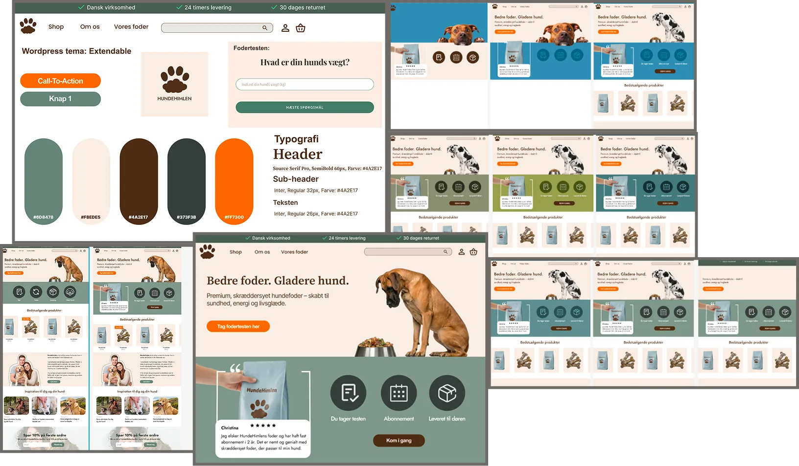
Derefter rykkede arbejdet over i den tekniske og funktionelle opbygning i WordPress og WooCommerce. Her var jeg med til at opbygge den tekniske struktur og sikre en brugervenlig navigation med kategorier, underkategorier og tags, så brugerne nemt kan filtrere produkterne på både mobil, tablet og desktop. Vi designede siderne med udgangspunkt i UX-principper og adfærdsdesign, hvor vi blandt andet brugte Cialdinis overtalelsesprincipper som Social Proof til at opbygge troværdighed og øge konverteringen. Samtidig implementerede vi SEO-optimerede tekster samt unikke meta-titler og -beskrivelser på tværs af kategorisider, produktsider og blogindlæg.
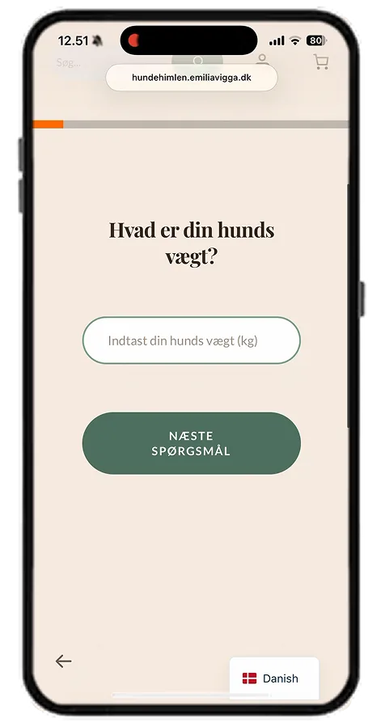
Det endelige resultat blev en komplet og responsiv webshop, som blev koblet tæt sammen med vores markedsføringsstrategi for sociale medier. For at drive den rette trafik til shoppen udviklede vi tre målrettede videoer til Meta, der ramte henholdsvis en kernemålgruppe, en tilpasset målgruppe og en kopimålgruppe (Lookalike). Projektet gav mig en stærk og praktisk forståelse for hele kæden i digital produktudvikling – fra den spæde målgruppeanalyse og Figma-skitsering til teknisk WooCommerce-eksekvering, SEO og konverterende design.
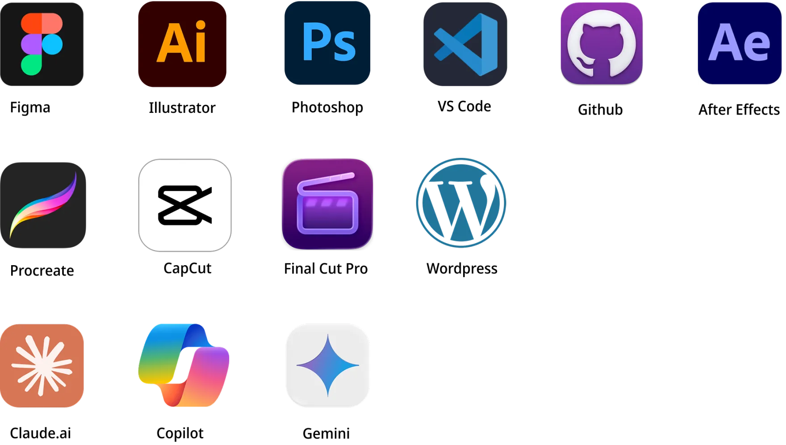
Email: emiliavigga@gmail.com
LinkedIn: linkedin.com/in/emilia-hørning